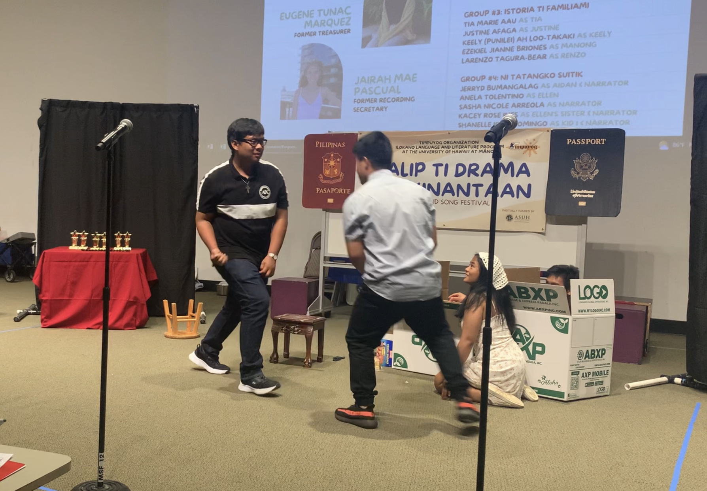

Timpuyog is an Ilokano term which translates to “togetherness”. The organization’s goal is to connect people together and teach the Ilokano culture using events as an avenue. The Drama, Film, Song, and Speech Festival is specifically for students to showcase their skills in speaking Ilokano and teach others of the Ilokano culture. My team participated in Fall 2022’s festival with immigration as the theme. With that theme in mind, my team decided that our drama will be based on problem with how some Filipinos go about immigrating to the United States.
A commonplace standard for Filipinos to immigrate to the United States is through family sponorship. With this in mind, many Filipino families arrange marriages for their daughters or sons to marry someone from the US so that they can get a green card and sponsor their family into the US. The problem with this method is that it doesn’t take into consideration what the person who is being married off thinks of the arrangement and there are some abusive relationships formed. My team decided to make our drama based on that context.
Our team all worked equally on this project. Everyone contributed to the brainstorming and preparation but I acted as a sort of unofficial director. What we came up was a story was about a girl who already had a lover in mind but was married off to an abusive husband. In the practice phase, I made sure to keep my team in check and that they knew how to pronunciate their lines and act out scenes correctly. Other members made sure to point out problems in our script and gave me suggestions on how to make a scene better.
Once we gave our last bow on the stage a sense of accomplishment and relief overcame me. The other festival dramas taught me more about Philippine culture while working with my own team taught me the importance of time management. The event also made me a lot closer with my peers.
Source: Timpuyog Website